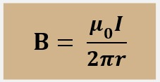
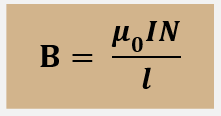
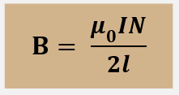
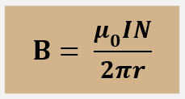

Penjelasan Medan Magnet
Pengertian Medan Magnet
Medan magnet adalah wilayah di sekitar magnet yang masih memengaruhi benda dengan sifat-sifat magnetik. Mirip dengan gaya listrik, kita menganggap bahwa gaya magnetik disebabkan oleh keberadaan sesuatu, yaitu medan magnet. Ketika muatan bergerak, medan magnet terbentuk sebagai hasilnya, dan medan ini selanjutnya memberikan gaya pada muatan bergerak lainnya.
Terdapat Interaksi Bahan dengan Medan Magnet, yaitu:
- Feromagnetik : Bahan seperti besi, kobalt, dan nikel yang memiliki domain magnetik yang dapat diatur dan sangat responsif terhadap medan magnet eksternal.
- Paramagnetik : Bahan seperti aluminium, magnesium, dan oksigen yang memiliki momen magnetik yang lemah dan sedikit tertarik ke medan magnet eksternal.
- Diamagnetik : Bahan seperti tembaga, emas, dan air yang menunjukkan sifat menolak medan magnet dan menghasilkan medan magnet induksi yang berlawanan arah dengan medan magnet eksternal.
Proses Terbentuknya Medan Magnet
Medan magnet terbentuk melalui pergerakan partikel bermuatan dalam suatu benda yang memiliki sifat magnetik. Ini dapat terjadi pada tingkat atomik saat elektron dalam atom bergerak mengelilingi inti atom. Elektron memiliki muatan negatif dan bergerak mengelilingi inti atom yang memiliki muatan positif.
Dalam materi ferromagnetik seperti besi dan nikel, atom-atom memiliki momen magnetik alami yang disebut spin. Ketika materi ferromagnetik ini dijepit dalam medan magnet eksternal, momen-momen magnetik atom-atom tersebut akan merata sehingga menghasilkan medan magnet yang kuat. Inilah mengapa benda-benda seperti besi dapat menjadi magnet setelah terpapar medan magnet eksternal.
Selain itu, medan magnet juga dapat dihasilkan oleh arus listrik yang mengalir melalui kawat. Ini dikenal sebagai elektromagnet. Ketika arus listrik mengalir melalui kawat, ia menciptakan medan magnet sepanjang kawat tersebut.
Prinsip Penggunaan
Medan magnet memiliki empat jenis prinsip yang dapat menjelaskan karakteristiknya penggunaannya.
- bahwa suatu medan magnet hanya menghasilkan arus listrik pada bagian tubuh dari magnet.
- medan magnet yang dapat terpengaruh oleh arus listrik dapat menghasilkan gaya. Prinsip ini digunakan pada motor listrik.
- tegangan listrik dapat dihasilkan pada medan magnet yang mengalami perpindahan penghantar listrik. Prinsip ini digunakan pada generator listrik.
- jumlah kumparan penghantar listrik menentukan lamanya waktu yang diperlukan untuk pertukaran suatu medan magnet.
Sifat Medan Magnet
- Medan magnet memiliki arah yang ditentukan oleh arah arus listrik atau gerakan partikel bermuatan.
- Medan magnet memiliki kekuatan yang dipengaruhi oleh kekuatan arus listrik dan jarak dari sumber medan magnet.
- Medan magnet dapat mempengaruhi dan dipengaruhi oleh benda-benda feromagnetik, seperti besi.
Rumus Medan Magnet
Berikut adalah beberapa rumus medan magnet yang penting:
Medan Magnet Kawat Lurus Berarus
untuk jumlah N lilitan :

Dimana:
- B = Kuat medan magnet
- μ₀ = Permeabilitas vakum (4π x 10⁻⁷ T m/A)
- N = Jumlah lilitan per satuan panjang
- I = Kuat arus listrik
- r = jarak titik ke kawat (m)
Medan Magnet Kawat Melingkar Berarus

untuk jumlah N lilitan :

Dimana:
- B = Kuat medan magnet
- μ₀ = Permeabilitas vakum (4π x 10⁻⁷ T m/A)
- N = Jumlah lilitan per satuan panjang
- I = Kuat arus listrik
- r = jari-jari lingkaran (m)
Medan Magnet di Dalam Solenoida
pada pusat solenoida :
pada ujung solenoida
Dimana:
- B = Kuat medan magnet
- μ₀ = Permeabilitas vakum (4π x 10⁻⁷ T m/A)
- N = Jumlah lilitan
- I = Kuat arus listrik (A)
- l = panjang solenoida (m)
Medan Magnet pada Toroida
Dimana:
- B = Kuat medan magnet
- μ₀ = Permeabilitas vakum (4π x 10⁻⁷ T m/A)
- N = Jumlah lilitan
- I = Kuat arus listrik (A)
- r = jari-jari (m)
Penerapan Medan Magnet
Berikut adalah 10 contoh penerapan medan magnet dalam kehidupan sehari-hari:
- Kompas
- Motor listrik
- Generator listrik
- Magnet dalam pengeras suara
- Magnet dalam MRI (Magnetic Resonance Imaging)
- Transformator
- Pemindai barcode
- Hard disk komputer
- Televisi dan monitor CRT
- Magnet pada pintu lemari es
Contoh Soal
Soal: Sebuah kawat lurus panjang dialiri arus listrik sebesar 2 A. Hitung kuat medan magnet pada jarak 5 cm dari kawat tersebut.
Pembahasan:
Rumus yang digunakan: B = (μ₀ I) / (2π r)
Diketahui:
- μ₀ = 4π x 10⁻⁷ T m/A
- I = 2 A
- r = 0.05 m
Sehingga:
- B = (4π x 10⁻⁷ x 2) / (2π x 0.05)
- B = (8π x 10⁻⁷) / (0.1π)
- B = 8 x 10⁻⁶ T
Kesimpulan
Medan magnet adalah konsep penting dalam fisika yang mempengaruhi banyak aspek kehidupan kita. Dari teori dasar hingga penerapan praktis, pemahaman tentang medan magnet membantu kita dalam inovasi teknologi dan berbagai penelitian ilmiah.
Profile
Bagas Satrio Nugroho 1IA24 | 50423254
Sebagai insinyur elektronik, Bagas menerapkan konsep medan magnet dalam desain perangkat teknologi. Pengalamannya sangat berharga dalam inovasi teknis.
Sylfi Perdana Putri 1IA24 | 51423418
Sebagai mahasiswa riset, Sylfi memfokuskan penelitiannya pada interaksi medan magnet dan materi. Dia berharap penelitiannya dapat berkontribusi pada penemuan baru.
Hafshah Az-Zahra 1IA24 | 50423556
Hafshah adalah peneliti geofisika yang fokus pada studi medan magnet bumi. Ia bekerja untuk mengungkap misteri medan geomagnetik dan dampaknya terhadap kehidupan kita.
Farhan Aditya 1IA24 | 50423453
Farhan adalah seorang guru fisika yang bersemangat menginspirasi siswa untuk menjelajahi dunia fisika. Ia menggunakan pendekatan kreatif untuk mengajar medan magnet.
Muhammad Fabian Rachadityo 1IA24 | 50423820
Dengan gelar Ph.D. dalam Fisika, Dr. Fabian telah meneliti medan magnet selama lebih dari 20 tahun. Beliau berdedikasi untuk memahami dan mengajarkan fenomena magnetik.
Tentang Kami
Web ini dibuat sebagai upaya untuk memenuhi tugas mata pelajaran Fisika dengan tema "Medan Magnet." Tujuan utama dari pembuatan web ini adalah untuk memberikan pemahaman yang komprehensif dan mendalam tentang fenomena medan magnet kepada para siswa dan pengunjung. Melalui konten yang disajikan, kami berharap dapat membantu memperjelas konsep-konsep penting dalam medan magnet, seperti pengertian, sifat-sifat, rumus-rumus, dan penerapannya dalam kehidupan sehari-hari.
Kami, Kelompok 6 dari kelas 1IA24, telah berkolaborasi untuk menyusun materi yang informatif dan menarik, dilengkapi dengan gambar dan contoh soal untuk memudahkan pemahaman. Selain itu, web ini juga berfungsi sebagai media interaktif di mana pengunjung dapat berkomentar dan berdiskusi mengenai topik medan magnet.
Harapan kami, melalui web ini, para pengunjung tidak hanya dapat memenuhi kebutuhan akademis mereka, tetapi juga menemukan inspirasi dan ketertarikan lebih dalam terhadap ilmu fisika dan fenomena alam yang menakjubkan ini.
Terima kasih telah mengunjungi web kami.